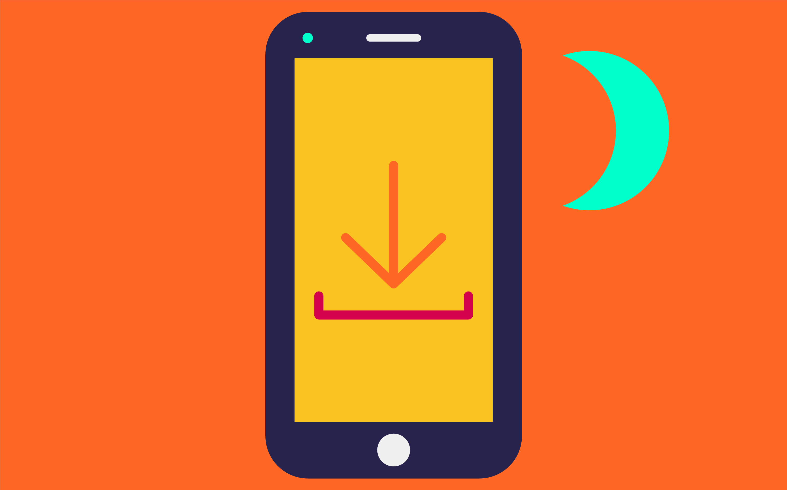

Noi, internet-dipendenti
Le nostre vite, società e relazioni sono internet-dipendenti. Ma le crisi recenti ci hanno rivelato anche quanto queste connessioni possano essere fragili. Quanto sappiamo davvero di come funziona la rete e di quello che possiamo fare per preservarla?
Inizia l'esperienza
Dimmi come consumi internet e ti dirò chi sei
Per prima cosa, rispondi a tre domande per rendere l’esperienza personalizzata.
Cominciamo
Internet è ovunque
Internet è parte integrante delle nostre società. È la porta da cui accediamo a passioni, relazioni, servizi, prodotti ed esperienze. Internet non è più qualcosa che si ha; è qualcosa che, semplicemente, c’è.
Nel mondo sono 4.5 miliardi le persone che utilizzano internet ogni giorno, con una penetrazione media del 59%, in forte aumento nei paesi in via di sviluppo in Medio Oriente, Africa e Asia. I paesi in cui l’accesso a internet è più diffuso sono Islanda e Kuwait - qui, il 99% della popolazione è connesso a internet - mentre quelli più in ritardo sono Eritrea e Sud Sudan (dove internet è ancora un bene prezioso, accessibile solo all’8% dei cittadini).
I nostri smartphone sono oggi la porta d’accesso privilegiata a internet (53%) e, nel solo 2019, la velocità di connessione dei telefoni è aumentata mediamente del 28%: sono molti di più gli utenti mobile che oggi effettuano attività online che richiedono un maggiore consumo di banda, come lo streaming video e l’online gaming.
Nonostante questa invadenza di internet nel nostro spazio-tempo, ci fermiamo raramente a pensare all’utilizzo che facciamo della rete. Nel grafico che segue puoi vedere come i tuoi consumi (in megabyte/ora) si rapportano ai dati di navigazione medi degli altri utenti nel corso di una giornata, in Italia:
consumo medio
VS
i tuoi consumi
Note: I grafici sono stati calcolati prendendo i dati del consumo di internet annuale, prima dell'emergenza COVID-19. Source: mix-it.net Dati relativi all'anno 2019/2020.
In Italia gli utilizzatori di internet sono oggi 49 milioni, con una penetrazione dell’82% sulla popolazione totale e una crescita del 2,4% rispetto all’anno precedente. La rete internet nel corso degli anni ha raggiunto una diffusione capillare - nella maggior parte delle regioni italiane possiamo connetterci al web in piazza o sul divano di casa, in una sala d’attesa o su un treno ad alta velocità, godendoci un’esperienza fluida e quasi priva di interruzioni.
In media, gli italiani utilizzano la rete internet per sei ore al giorno, di cui quasi due passate sui social. Quasi tutti gli italiani connessi accedono a internet anche attraverso il proprio telefono (92%). Da mobile, Internet viene utilizzato soprattutto per comunicare via chat (92% del totale), navigare sui social network (91%), utilizzare le mappe (79%), guardare video (73%), e fare acquisti (68%).
Il tuo apporto rispetto al totale dei dati scaricati in Italia, identificati con il cerchio blu, equivale al puntino rosso posto al centro del cerchio.
Potrà sembrare un punto irrisorio rispetto al consumo totale dell'Italia...
...ma come sarebbe il consumo di dati in Italia se tutti si connettessero come te?
Come è fatto internet?
Internet è trasparente, etereo, impercettibile; è qualcosa che per noi semplicemente “esiste”, e perciò tendiamo a darlo per scontato. Raramente ci fermiamo a pensare all’infrastruttura di internet: succede solo quando, preoccupati, ci rendiamo conto che internet “non c’è” o “non va”. Eppure, quanti di noi sarebbero davvero in grado di descrivere come è fatto internet?
La rete è molto più fisica di quanto immaginiamo. Poggia su un’infrastruttura nascosta alla vista ma quantomai fisica e reale, fatta di antenne, data center, centri di interscambio e cavi sottomarini, su cui viaggiano i bit che compongono i nostri messaggi, le nostre videochiamate, i film che guardiamo su Netflix o le fotografie che carichiamo su Instagram.
Questi dati vengono stipati e veicolati attraverso i data center, grossi centri che ospitano le apparecchiature ed i servizi di gestione dei dati. Solo in Italia ce ne sono oltre 50, il più grande dei quali si trova in provincia di Bergamo, in una zona a bassa intensità sismica per evitarne il danneggiamento. Il più vasto data center al mondo si trova in Cina, nella città di Langfang, è di proprietà del governo cinese e occupa un’area grande quanto 60 campi da calcio.
Il grosso dei dati che attraversano il pianeta viaggiano su decine di cavi poggiati sul fondo degli oceani e che, se sommati nella loro lunghezza, arrivano a misurare oltre 1 milione e 200mila chilometri: un’infrastruttura costantemente a rischio, esposta a disastri naturali, trivellazioni, e persino agli attacchi degli squali. Alcuni di questi grossi cavi sono di proprietà pubblica, ma oltre la metà appartengono a grandi corporation private come Amazon, Microsoft, Facebook e Google.
I concetti come quello di “nuvola” o “cloud ”appaiono quindi molto equivoci una volta che ci si ferma a ragionare sull’estrema materialità della struttura di internet. Il sociologo Vincent Mosco ha riassunto questo concetto in una frase diventata iconica: “Non esiste nessun cloud, è solo il computer di qualcun altro”.
Anche internet si stressa
L’essenza fisica della rete internet la rende soggetta a momenti di “stress” anche improvvisi: ogni anno, le interruzioni di servizio sono decine di migliaia, la maggior parte delle quali causate da guasti tecnici agli Internet Service Provider o da disastri naturali - come tsunami o terremoti - che incidono sulla sua infrastruttura fisica o sull’energia elettrica in grado di alimentarla.
La questione è tornata di attualità recentemente, nel pieno dell’emergenza coronavirus, quando intere strutture sociali e organizzative - costrette a riprogrammarsi per funzionare a distanza - si sono appoggiate a internet per continuare a operare anche da remoto. Generando picchi di utilizzo senza precedenti nella storia:
Puoi esplorare il grafico tu stesso, selezionando e deselezionando i diversi stati e confrontandoli in modo più preciso.
Note: Dati selezionati dal database fornito sul sito Ookla Speedtest. Source: speedtest.net. Dati relativi all'anno 2020.
-
Germania
-
Svizzera
-
Italia
-
U.K.
-
Olanda
-
U.S.A.
-
Francia
-
Spagna
Tra marzo e aprile 2020, in seguito all’implementazione globale delle misure di distanziamento sociale, si è creata una situazione inaudita: con scuole e uffici chiusi e la necessità di mantenere l’operatività di lavoratori e studenti, le app di videochiamate - da Zoom a Google Meet, passando per Microsoft Teams e Skype - sono diventate parte della quotidianità di miliardi di persone.
E non solo: anche fuori dall’orario di lavoro, tra aperitivi cancellati e ristoranti chiusi, tantissime persone hanno aumentato le ore di consumo di intrattenimento online, trascorrendo ore e ore sui propri computer o sulle smart tv guardando film, serie televisive o video su YouTube.
Cosa “pesa” di più sulla rete?

Note: I dati riportati derivano dalle medie dei consumi riportati dal database SimilarWeb. Source: SimilarWeb.com Dati relativi all'anno 2020.
Costretti a distanziarci, abbiamo cercato rifugio nella comunicazione online—soprattutto in videochiamata: il numero di utenti attivi di Zoom, società californiana di servizi di teleconferenza, è quasi decuplicato nel giro di qualche settimana. Un trend simile si è riscontrato su Microsoft Teams, Google Meet e servizi analoghi.
In generale, lo streaming video è il principale fattore di ‘stress’ per la rete internet - che già dal 2010 è la prima categoria per traffico web, sia per l’ampio consumo di dati legato al medium in sé, sia perché i miglioramenti all’infrastruttura di internet hanno reso possibili attività un tempo difficili da immaginare—come le videochiamate con decine di partecipanti o la fruizione di serie tv in alta definizione, in contemporanea, per miliardi di utenti.
Ma il picco nell’uso di banda causato dall’emergenza coronavirus ha avuto un impatto su tutte le tipologie di utilizzo, non solo i video: messaggistica online, social network, e-commerce. Per arginare un possibile sovraccarico della rete, tra marzo e aprile 2020 aziende come YouTube, Amazon e Netflix hanno annunciato misure per ridurre la qualità dei propri streaming video, nel tentativo di garantire una velocità adeguata di trasmissione dei dati anche a fronte di una domanda di utilizzo mai così estesa ed elevata.
Internet può collassare?
A pesare sulla rete internet durante la crisi del coronavirus non è stata solo l’intensità di utilizzo, ma anche la tipologia di sovraccarico sofferta dall’infrastruttura: con lo smart working e milioni di lavoratori collegati in videoconferenza dalle loro case, il consumo di banda si è spostato dalle connessioni aziendali (progettate, almeno in teoria, per sopportare la trasmissione di ingenti flussi di dati) ai nodi privati delle singole abitazioni, mettendo sotto stress una miriade di punti di connessione decentralizzati. Questa situazione anomala ha spinto gli analisti del settore a prevedere la possibilità di un ‘blackout’ di internet.
Ma la rete, per nostra fortuna, è stata progettata per assorbire gli shock: se un server è fuori uso, i dati in arrivo vengono dirottati su un nodo funzionante, e questo senza che l’utente se ne accorga. E anche quando alcuni di questi dati vanno perduti, i problemi sono limitati: la rete è stata infatti progettata per tollerare i cosiddetti “packet loss”, all’interno di un certo margine. Lo vediamo accadere ogni tanto anche in prima persona, quando il nostro video va in buffering oppure la qualità dello streaming si riduce automaticamente per adeguarsi alla banda disponibile. Quindi, nonostante i timori, anche in un periodo emergenziale non si sono verificati particolari disservizi: internet ha dimostrato quindi di poter reggere urti di grandi dimensioni.
L’emergenza ci ha insegnato comunque che internet è la nostra safety net: il fluido che permette di collegare le terre emerse delle nostre relazioni, preservando lavoro, affetti, salute fisica e mentale. Arcipelaghi che possono esistere e funzionare solo in relazione tra loro, soprattutto in condizioni estreme.
Ricordiamoci però che la rete è una casa fragile, instabile, che non possiamo dare per scontata. E allora ricordiamoci di proteggerla. Perché anche per superare la prossima crisi avremo bisogno di internet. Ecco quindi alcuni consigli su come possiamo limitare il nostro consumo di internet, o almeno, per riuscire a utilizzarlo in modo più consapevole.
Consumare meno banda: una mini-guida
Riduci la qualità del tuo streaming
Se guardi spesso film o serie sul tuo computer o su una smart TV, puoi ridurre la definizione dei video che fruisci. Certo, tutti amiamo vedere il nostro film preferito in 4K, ma l’altissima definizione richiede una grande mole di dati (e, diciamocelo francamente, spesso gli schermi che abbiamo in casa non sono nemmeno adatti a riflettere la qualità che ricevono).
Aggiorna sempre, ma di notte

Gli aggiornamenti automatici di sistemi operativi, app e plugin sono utili per prevenire problemi di navigazione e malfunzionamenti, oltre a garantire l’accesso alla versione più recente del software che utilizziamo. Puoi impostare però questi aggiornamenti durante la notte, quando il consumo di banda è generalmente più basso, per ridurre il carico di stress causato sulla rete.
Se hai un sito web, alleggeriscilo
Chi progetta e gestisce siti web ha una grande responsabilità nel rendere internet più ‘leggero’: animazioni grafiche, video in riproduzione automatica o immagini in altissima risoluzione sono senz’altro piacevoli da vedere, ma richiedono anche l’utilizzo di molta banda sia in fase di caricamento che in fase di download. Una volta che il vostro sito sarà più leggero, diventerà anche più veloce, con grande piacere degli utenti che lo visitano.
Limita i backup automatici
Se utilizzi un sistema di backup automatico dei file presenti sul tuo device, spesso puoi impostare la quantità di dati caricati o porre dei limiti temporali alla sincronizzazione automatica. I servizi di backup in cloud, quando attivi, sono progettati per consumare quanta più banda possibile. Quindi, occhio.
Prediligi l’audio al video
Se passi molto tempo in videochiamata, che sia per lavoro, studio o piacere, cerca di utilizzare la webcam solo se strettamente necessario. Nemmeno i nostri colleghi ed amici sono così ansiosi di vedere la nostra faccia in primo piano per ore e ore di riunioni.
Attiva le opzioni di data-saving su device e social
Oggi, quasi ogni smartphone offre funzionalità di risparmio dati che, una volta attivate, limitano il consumo di banda per le applicazioni che agiscono in background—e che utilizzano la rete costantemente, anche quando non ce ne accorgiamo. Lo stesso vale per piattaforme social come Facebook e Twitter, che permettono di disattivare l’autoplay dei contenuti: così guarderai soltanto i video che ti interessano davvero.
Progetto degli studenti del lab. di Design dei Sistemi del corso di Laurea Magistrale in Design della Università degli studi della Repubblica di San Marino, con la supervisione editoriale del Sole 24 Ore Design e sviluppo: Ilenia Balella e Pietro Baruzzi Docente: Matteo Moretti Se vuoi vedere l'articolo con le animazioni clicca qui